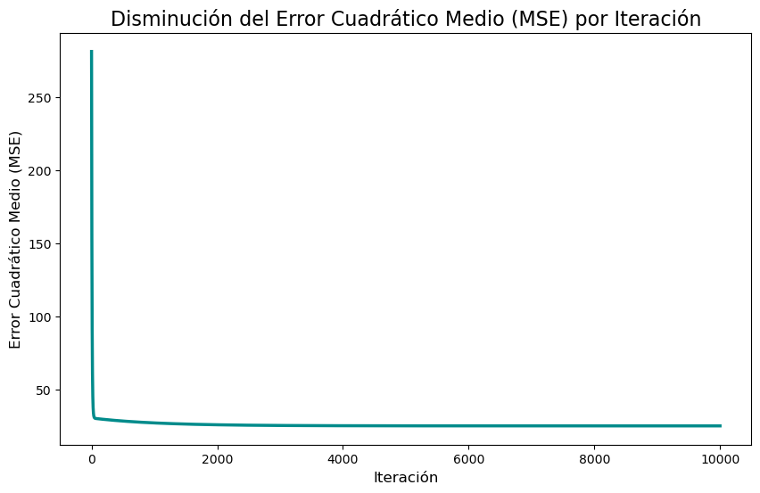

import pandas as pd
import numpy as np
import seaborn as sns
import matplotlib.pyplot as plt
from sklearn.linear_model import LinearRegression
from sklearn.preprocessing import StandardScalerDescenso en gradiente con regresión lineal
def genera_datos_lineales(
n:int=100,
slope:float=0.5,
intercept:float=1,
noise_scale:float=1.5
) -> pd.DataFrame:
X = np.linspace(0, 10, n)
y = slope * X + intercept + np.random.normal(scale=noise_scale, size=n)
df = pd.DataFrame({"x": X, "y": y})
return dfdef descenso_gradiente_historial(datos: pd.DataFrame, learning_rate: float, iteraciones: int) -> tuple[float, float, list, list, list]:
"""
Realiza el descenso de gradiente para una regresión lineal y guarda el historial
de los parámetros (m, b) y del Error Cuadrático Medio (MSE) en cada iteración.
"""
# 1. Inicializar parámetros y listas de historial
m = 0.0
b = 0.0
n = float(len(datos))
historial_m = []
historial_b = []
historial_error = []
# 2. Iterar para optimizar m y b
for i in range(iteraciones):
# Almacenar los valores de la iteración actual ANTES de actualizarlos
historial_m.append(m)
historial_b.append(b)
# Calcular las predicciones actuales
y_pred = m * datos['x'] + b
# Calcular y almacenar el Error Cuadrático Medio (MSE)
error = np.mean((datos['y'] - y_pred) ** 2)
historial_error.append(error)
# Calcular los gradientes
D_m = -(2/n) * sum(datos['x'] * (datos['y'] - y_pred))
D_b = -(2/n) * sum(datos['y'] - y_pred)
# 3. Actualizar los parámetros
m = m - learning_rate * D_m
b = b - learning_rate * D_b
return m, b, historial_m, historial_b, historial_error# Hiperparámetros
learning_rate = 0.001
iteraciones = 10000
# Ejecutar el descenso de gradiente
datos = genera_datos_lineales(n=1000, slope=2, intercept=5, noise_scale=5)
m_final, b_final, h_m, h_b, h_error = descenso_gradiente_historial(datos, learning_rate, iteraciones)plot_data = pd.DataFrame({
'Iteración': range(iteraciones),
'MSE': h_error
})
plt.figure(figsize=(10, 6))
sns.lineplot(data=plot_data, x='Iteración', y='MSE', color='darkcyan', linewidth=2.5)
# 4. Añadir títulos y etiquetas
plt.title('Disminución del Error Cuadrático Medio (MSE) por Iteración', fontsize=16)
plt.xlabel('Iteración', fontsize=12)
plt.ylabel('Error Cuadrático Medio (MSE)', fontsize=12)Text(0, 0.5, 'Error Cuadrático Medio (MSE)')
# 1. Preparar los datos
# Scikit-learn espera que X sea un array 2D
X_sklearn = datos[['x']]
y_sklearn = datos['y']
# 2. Crear y entrenar el modelo
modelo = LinearRegression()
modelo.fit(X_sklearn, y_sklearn)
# Obtener los coeficientes
m_sklearn = modelo.coef_[0]
b_sklearn = modelo.intercept_print("--- Implementación Manual ---")
print(f"La pendiente (m) encontrada es: {m_final:.4f}")
print(f"El intercepto (b) encontrado es: {b_final:.4f}")
print("\n--- Resultado con Scikit-Learn ---")
print(f"La pendiente (m) encontrada es: {m_sklearn:.4f}")
print(f"El intercepto (b) encontrado es: {b_sklearn:.4f}")--- Implementación Manual ---
La pendiente (m) encontrada es: 1.9856
El intercepto (b) encontrado es: 5.0163
--- Resultado con Scikit-Learn ---
La pendiente (m) encontrada es: 1.9804
El intercepto (b) encontrado es: 5.0510Implementación multivariada
def generar_datos_lineales_multivariados(n_muestras: int, n_caracteristicas: int, ruido: float = 0.5) -> tuple[pd.DataFrame, np.ndarray, float]:
"""
Genera un conjunto de datos sintético para regresión lineal multivariada.
Args:
n_muestras (int): El número de puntos de datos a generar (filas).
n_caracteristicas (int): El número de variables independientes (características).
ruido (float): La desviación estándar del ruido gaussiano a añadir.
Controla la dispersión de los puntos.
Returns:
tuple[pd.DataFrame, np.ndarray, float]:
- Un DataFrame de pandas con las características (x1, x2, ...) y la variable objetivo (y).
- El array de coeficientes (pesos) reales que se usaron para generar los datos.
- El intercepto (sesgo) real que se usó.
"""
# 1. Generar las características (X) con valores aleatorios entre 0 y 10
X = 10 * np.random.rand(n_muestras, n_caracteristicas)
# 2. Generar coeficientes e intercepto reales aleatorios
# Estos son los "verdaderos" parámetros que un modelo intentaría encontrar.
coeficientes_reales = np.random.randn(n_caracteristicas) * 2
intercepto_real = np.random.randn() * 5
# 3. Generar el ruido gaussiano
# El ruido simula la variabilidad aleatoria en los datos del mundo real.
ruido_gaussiano = np.random.randn(n_muestras) * ruido
# 4. Calcular la variable objetivo (y) usando la ecuación lineal
# y = (X • coeficientes) + intercepto + ruido
y = np.dot(X, coeficientes_reales) + intercepto_real + ruido_gaussiano
# 5. Formatear la salida en un DataFrame de pandas
nombres_columnas = [f'x{i+1}' for i in range(n_caracteristicas)]
datos = pd.DataFrame(X, columns=nombres_columnas)
datos['y'] = y
return datos, coeficientes_reales, intercepto_realnum_muestras = 200
num_caracteristicas = 10
nivel_ruido = 1.5
# Generar los datos
datos_generados, coeficientes, intercepto = generar_datos_lineales_multivariados(
n_muestras=num_muestras,
n_caracteristicas=num_caracteristicas,
ruido=nivel_ruido
)def descenso_gradiente_multivariado(datos: pd.DataFrame, learning_rate: float, iteraciones: int) -> tuple[np.ndarray, float, list]:
"""
Realiza el descenso de gradiente para una regresión lineal multivariada.
Args:
datos (pd.DataFrame): DataFrame que contiene las características y la variable objetivo 'y'.
learning_rate (float): La tasa de aprendizaje.
iteraciones (int): El número de iteraciones para ejecutar el algoritmo.
Returns:
tuple[np.ndarray, float, list]:
- El array de coeficientes (pesos) optimizados.
- El intercepto (sesgo) optimizado.
- Una lista con el historial del Error Cuadrático Medio (MSE) en cada iteración.
"""
# 1. Preparar los datos
X = datos.drop('y', axis=1).values # Matriz de características
y = datos['y'].values # Vector de la variable objetivo
n_muestras, n_caracteristicas = X.shape
# 2. Inicializar parámetros
coeficientes = np.zeros(n_caracteristicas)
intercepto = 0.0
historial_error = []
# 3. Iterar para optimizar los parámetros
for i in range(iteraciones):
# Calcular las predicciones (producto punto de X y coeficientes)
# Ecuación: y_pred = (X • coeficientes) + intercepto
y_pred = np.dot(X, coeficientes) + intercepto
# Calcular el Error Cuadrático Medio (MSE) y guardarlo
error = np.mean((y - y_pred) ** 2)
historial_error.append(error)
# Calcular los gradientes (derivadas parciales)
# El gradiente es la dirección de máximo ascenso del error.
# Lo calculamos de forma vectorizada para eficiencia.
D_coeficientes = -(2/n_muestras) * np.dot(X.T, (y - y_pred))
D_intercepto = -(2/n_muestras) * np.sum(y - y_pred)
# 4. Actualizar los parámetros (moverse en dirección opuesta al gradiente)
coeficientes = coeficientes - learning_rate * D_coeficientes
intercepto = intercepto - learning_rate * D_intercepto
return coeficientes, intercepto, historial_errornum_muestras = 200
num_caracteristicas = 3
nivel_ruido = 1.5
datos_generados, coef_reales, int_real = generar_datos_lineales_multivariados(
n_muestras=num_muestras,
n_caracteristicas=num_caracteristicas,
ruido=nivel_ruido
)
X_original = datos_generados.drop('y', axis=1)
y = datos_generados['y']
scaler = StandardScaler()
X_escalado = scaler.fit_transform(X_original)
datos_escalados = pd.DataFrame(X_escalado, columns=X_original.columns)
datos_escalados['y'] = y.values
learning_rate = 0.01
iteraciones = 1000
coef_aprendidos, int_aprendido, error_hist = descenso_gradiente_multivariado(
datos=datos_escalados,
learning_rate=learning_rate,
iteraciones=iteraciones
)
modelo_sklearn = LinearRegression()
modelo_sklearn.fit(X_escalado, y)
coef_sklearn = modelo_sklearn.coef_
int_sklearn = modelo_sklearn.intercept_print("--- Comparación de Parámetros (con datos escalados) ---")
print(f"Intercepto GD: {int_aprendido:.4f} | Intercepto Sklearn: {int_sklearn:.4f}")
for i in range(num_caracteristicas):
print(f"Coef. x{i+1} GD: {coef_aprendidos[i]:.4f} | Coef. x{i+1} Sklearn: {coef_sklearn[i]:.4f}")--- Comparación de Parámetros (con datos escalados) ---
Intercepto GD: -16.0492 | Intercepto Sklearn: -16.0492
Coef. x1 GD: -6.1331 | Coef. x1 Sklearn: -6.1331
Coef. x2 GD: -2.4005 | Coef. x2 Sklearn: -2.4005
Coef. x3 GD: -2.0273 | Coef. x3 Sklearn: -2.0273